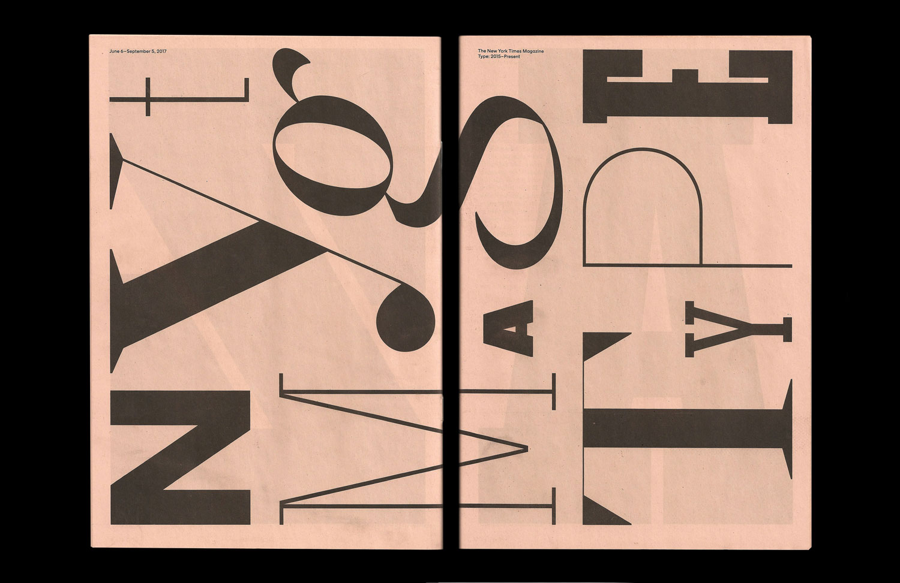
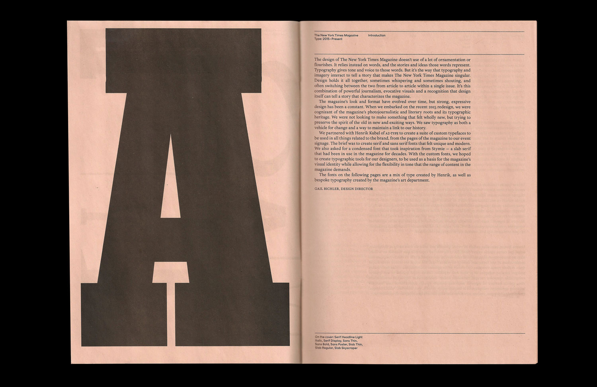
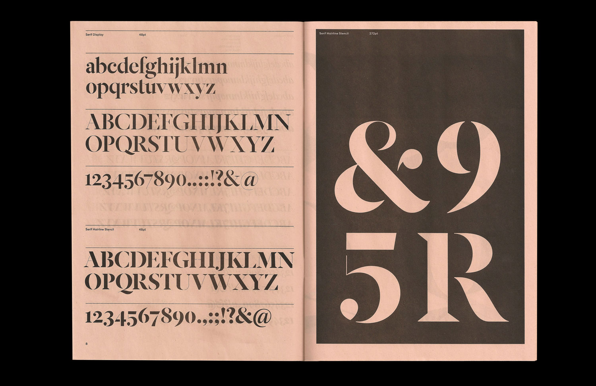
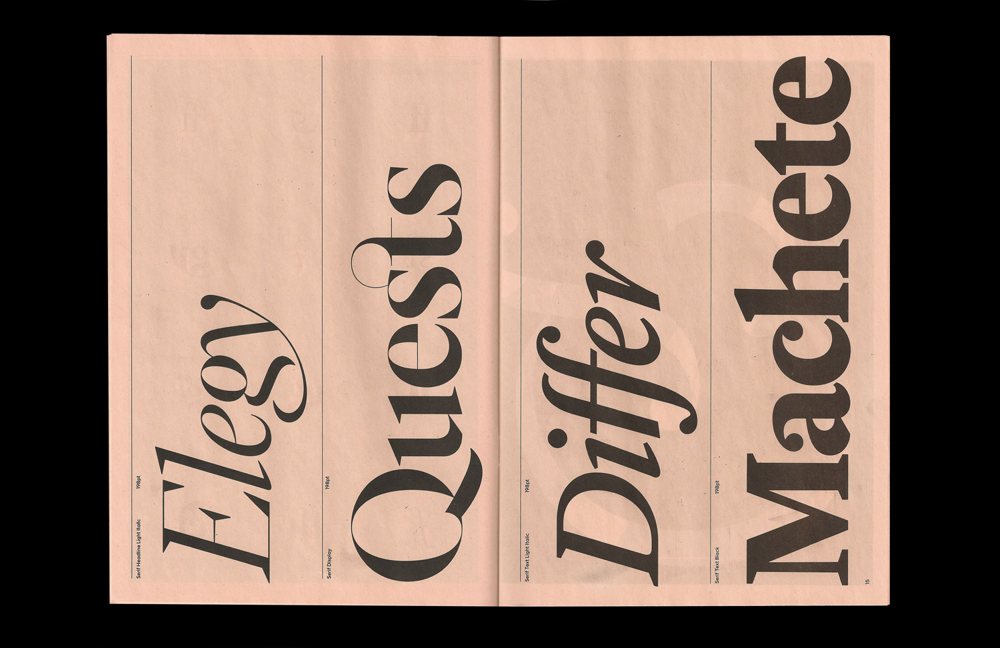
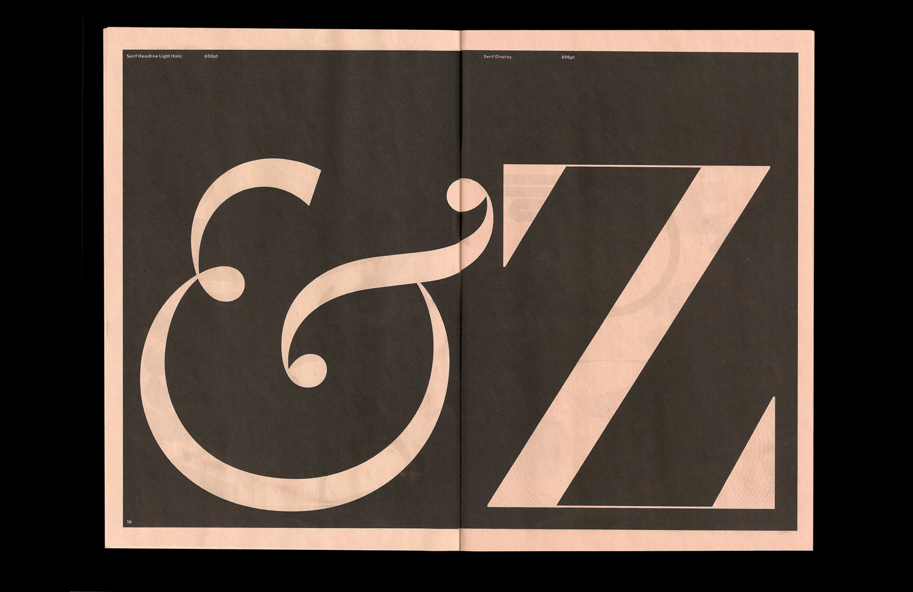
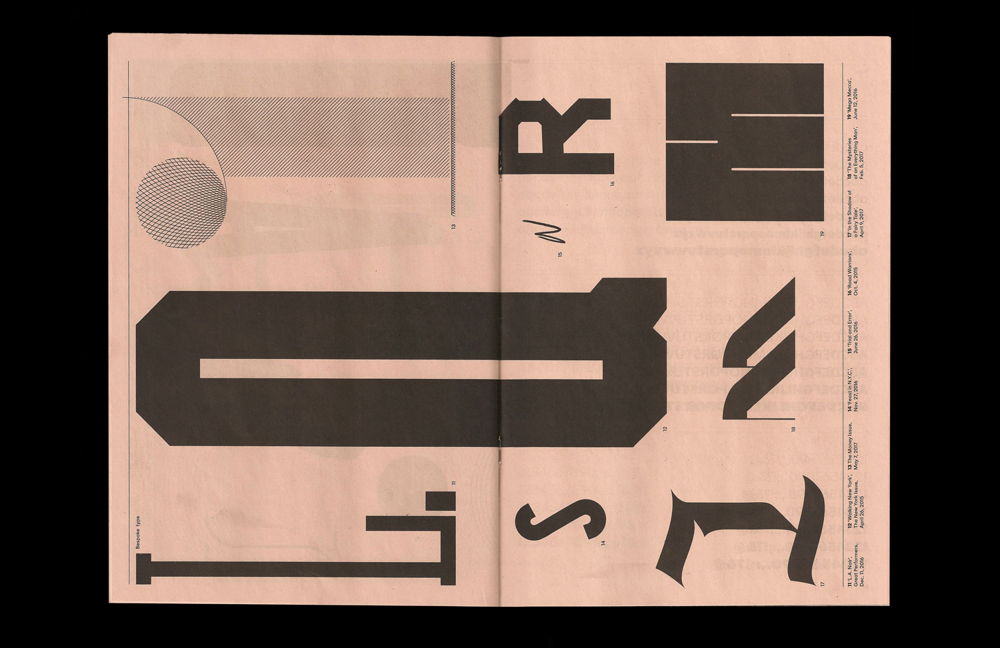
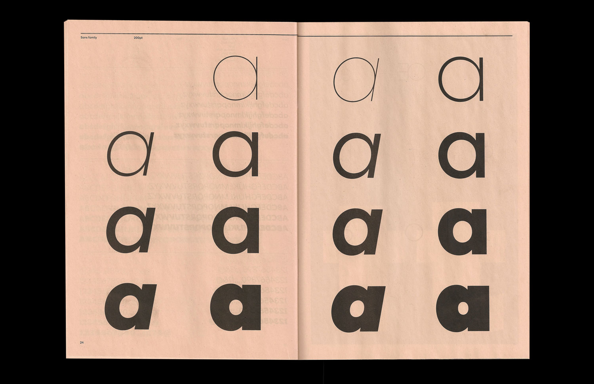
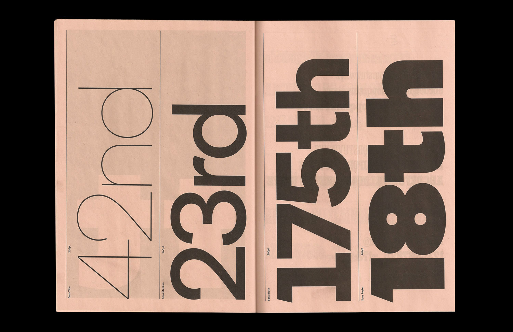
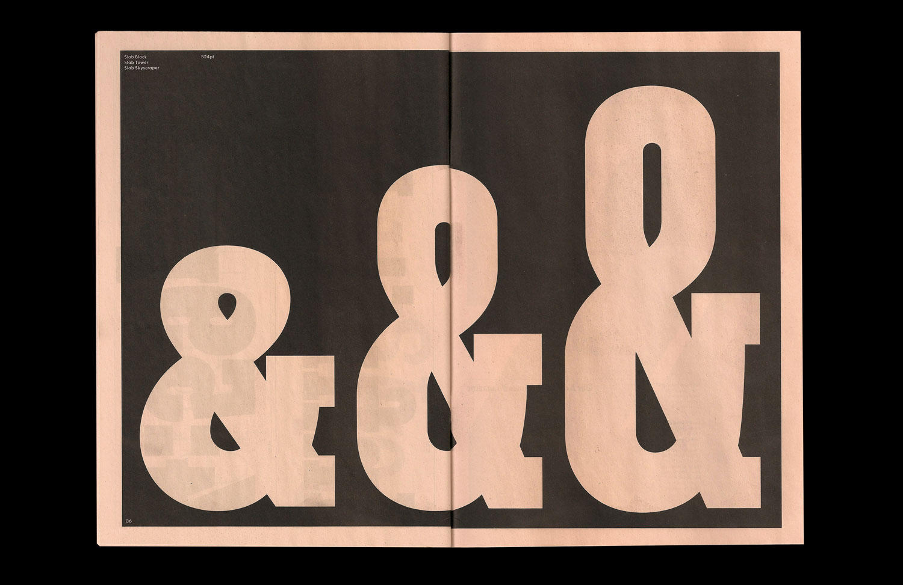

The New York Times Magazine
'Type: 2015–Present'
7 x 10.25" (Edition of 500)
2017






A 40-page specimen featuring the typefaces drawn for The New York Times Magazine by the type designer Henrik Kubel. This was printed on salmon newsprint in an edition of 500 to commemorate the magazine's show 'The New York Times Magazine Type: 2015–Present', which was on view at Type Director's Club in New York from June to early September of 2017.